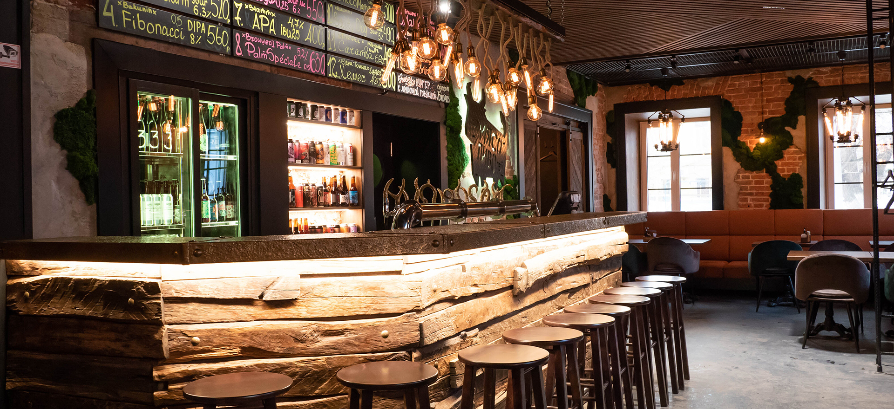

Нижний Новгород в последние годы продолжает расцветать и вкусно пахнуть Это уже не просто один из крупнейших городов России, а крутой туристический маршрут. Местным маркетологам можно поставить твердую пятерку только за то, что они закрепили за городом звание Столицы закатов. Географические и ландшафтные особенности города помноженные на отлично спроектированные и построенные многоуровневые набережные Волги и Оки, позволяют с комфортом расположиться и наслаждаться чудными видами заката солнца. Сегодня предлагаю пройтись по одной из старейших улиц города, переполненной памятниками архитектуры, ресторанами, барами, кафе...
Рога и копыта
Наша первая точка объединила в себе и архитектурную достопримечательность - это барский дом с двумя флигелями постройки первой половины ХIX века, принадлежащий одному из самых известных в России дворянскому роду князей Голицыных, и мясной ресторан с крафтовым пивом.
Рога и копыта, Рождественская 47
И хотя эта точка была у меня на карте отмечена для посещения, я немного поколебался перед входом. Причина, скорее всего, в капитальном ремонте фасада исторического здания - мой внутренний перфекционизм не позволял идти в сторону не красоты:)) Но, в итоге, визитом остался доволен и с удовольствием готов рекомендовать это место.Внутри классный интерьер с кирпичными стенами и обилием кованных деталей по теме заведения. Рога и копыта тут везде - ножки стульев, барная стойка и, конечно, пивные краны. Супер позитивный персонал - поможет, подскажет и просто поддержит общение. Разнообразное меню по приемлемым ценам.Выбор пива тут не удивит продвинутого биргика, но 14 кранов и холодильник с баночками позволят найти, чем запить свой бургер;)
«Любимое место! Вкусная еда, хорошее обслуживание и низкие цены. Каждый должен попробовать!»
Иван Иванов, нижегородский гид и историк
Наша первая точка объединила в себе и архитектурную достопримечательность - это барский дом с двумя флигелями постройки первой половины ХIX века, принадлежащий одному из самых известных в России дворянскому роду князей Голицыных, и мясной ресторан с крафтовым пивом.

Рога и копыта, Рождественская 47
Медные трубы
Этот коктейльный бар я включил в маршрут по причине того, что в последнее время он зачастил во всевозможных барных рейтингах. Неоднократно включался в топ среди всех российских баров, а недавно победил в одной из профессиональных премий в номинации "Лучший подбор алкоголя". И как бы скептически я к этому не относился, что-то в этом есть.Мой график пребывания во время последнего визита в город не совпал с режимом работы данного заведения и лично я его оценить пока не смог. Но может кому будет интересно и полезно.
Этот коктейльный бар я включил в маршрут по причине того, что в последнее время он зачастил во всевозможных барных рейтингах. Неоднократно включался в топ среди всех российских баров, а недавно победил в одной из профессиональных премий в номинации "Лучший подбор алкоголя". И как бы скептически я к этому не относился, что-то в этом есть.Мой график пребывания во время последнего визита в город не совпал с режимом работы данного заведения и лично я его оценить пока не смог. Но может кому будет интересно и полезно.
«Очень уютное заведение с небольшим магазином. Приятная атмосфера и вкусная еда»
Иван Иванов, нижегородский гид и историк
Помимо классической пиццы, в меню есть авторские вариации, например, с дальневосточными гребешками и сливочно-шпинатным соусом. Запить всё это предлагают вином, созданным по принципам биодинамики и натурального виноделия — в карте явный акцент на подобную стилистику. У пиццерии есть летний дворик, в котором по выходным работает блошиный рынок и играют виниловые диджей-сеты.
Медные трубы, Рождественская 40
TT Bistro
Маленький кусочек Франции расположен в центре Нижнего Новгорода на улице Пискунова. За кухню отвечает Дмитрий Степанов, за плечами которого 25 лет работы поваром и стажировки в Провансе. В меню — французская классика, и делают ее исключительно из нижегородских продуктов. Еще в бистро ежедневно с 9 до 15 часов действует меню завтраков: можно заказать круассан и бокал игристого — идеальное начало любого утра.
«Я стажировался в Провансе, и Франция всегда была и остается для меня особой страстью, поэтому в меню собраны именно французские блюда, которые стали моей визитной карточкой. Наша кухня — смесь французского с нижегородским, я считаю, что любую технологию можно повторить, используя локальные продукты. Например, телячьи щеки со Средного рынка мы подаем по-бургундски, классический луковый суп готовим из арзамасского лука с нижегородским грюйером, а парижский флан выпекаем из топленого городецкого творога. В сезонном меню используем местные сморчки.» – Дмитрий Степанов, шеф TT Bistro
Пяткин
Это не просто ресторан - это, практически, музей) Интерьер с расписными стенами, резными комодами, ажурными скатертями... Заходите внутрь и попадаете в другое время. Эдак лет на сто назад. Именно так, празднично и красиво, по мнению большинства, и выглядела жизнь купечества в те годы. А песни в исполнении Шаляпина фоном только добавляют шика.В это заведение в первый раз мы попали много лет назад и остались довольны и обедом и обслуживанием. Приятно, что за прошедшие годы ресторан держит заданный высокий уровень.В меню блины с красной икрой, уха с расстегаями, пирожки с груздями, поросячья корейка и пожарские котлетки.
Пяткин, Рождественская 25
Безухов
Еще одно место, где большое значение придают деталям. Прикольный интерьер, в котором с первого взгляда заметны вложенные усилия дизайнеров и архитекторов. Да и подача многих блюд очень оригинальна. Уверен, что для многих это место станет любимым в городе. Но мне оно не зашло. Я захаживал за последние годы сюда раза три, в надежде, что уж в этот раз я проникнусь к нему, но увы. Но в маршрут включу и оставлю вам решать, достойное это место или проходное.
Пяткин, Рождественская 25

159

Поделиться статьей


 7 мин.
7 мин.